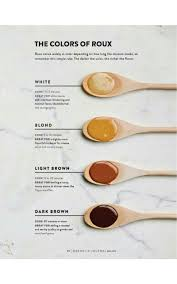
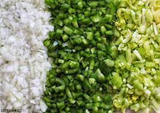

Roux is the base of many cajun dishes such as gumbo or etoufee. It is used as a thickening agent and also provides some of the unique flavor profiles. Below I have included a picture reference for the different roux stages which includes the approximate cooking times as well as the desired colors. If you are planning on making gumbo please follow these directions before continuing.
To prepare a roux you will start with about equal parts flour and fat (I will be using lard). About 1 cup of each should do. It is ideal to use a cast iron skillet and a wooden spoon avoid using non stick pans due or plastic spoons to the scraping required and the high temperatures. Turn heat on medium and consitently scrape bottom with spoon to prevent burning until desired color is reached.
The Holy Trinity is a staple of cajun cooking included in almost every dish. This mixture of equal parts celery, onion, and green bell peppers is what creates many of the flavors unique to these dishes and will be the main vegetables you will use for a variety of dishes.
